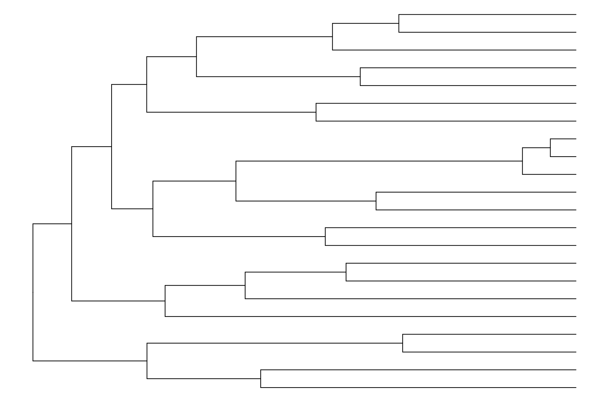
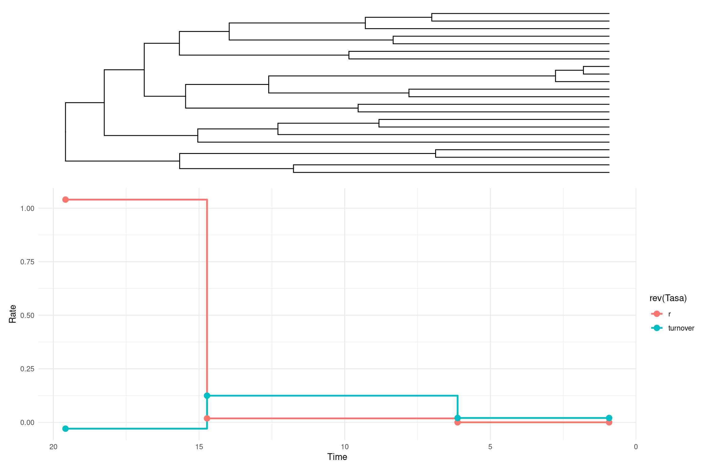
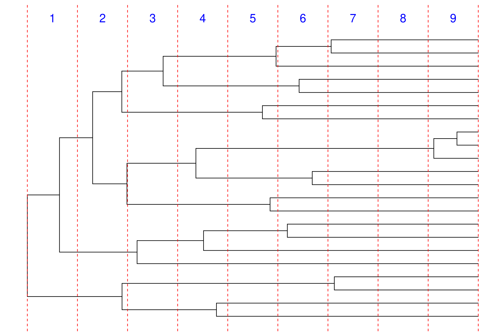

Haz clic en la imagen para ver el PDF de la presentación
Modelos con cambios en las Tasas de diversificación en R con TreePar
Introducción
En estudios filogenéticos, los modelos de nacimiento-muerte (birth-death models) permiten inferir cómo han cambiado las tasas de diversificación (\(\lambda\)) y extinción (\(\mu\)) a lo largo del tiempo. Sin embargo, estas tasas no son siempre constantes. Diversos eventos evolutivos, como la aparición de nuevas adaptaciones o cambios ambientales, pueden causar variaciones en la dinámica de diversificación de un linaje.
El paquete TreePar permite ajustar modelos de diversificación con cambios en la tasa mediante la función bd.shifts.optim(). Esta función estima la mejor combinación de tasas de diversificación y extinción en diferentes periodos de tiempo, según la estructura de una filogenia dada.
Cargar librerías y el árbol filogenético
# Cargar las librerías necesariaslibrary(ape) library(TreePar)library(tidyverse)library(ggtree)# Cargar el árbol desde un archivo Nexustree <-read.nexus("../docs/u1_PatDiv/subarbol_ingroup.nex")# Visualizar el árbolggtree(tree) +theme_tree()

Obtención de los tiempos de diversificación
Extraeremos y ordenaremos los tiempos de diversificación (tiempos de ramificación) del árbol:
# Obtener y ordenar los tiempos de especiación# La función getx() extrae los tiempos de ramificación del árbol.times <-sort(getx(tree), decreasing =TRUE) # sort () rdena los tiempos en orden descendente.times <-unname(times) # elimina los nombres de los elementos del vector para simplificar su manipulación.print(times)
Definiremos los parámetros necesarios para el análisis de cambios en las tasas de diversificación:
rho <-22/26# Proporción de especies muestreadas (22 de 26 especies)grid <-0.2# Tamaño de la grilla de búsqueda de cambios de tasa (en millones de años)start <-min(times) # Tiempo inicial para la búsqueda de cambios de tasaend <-max(times) # Tiempo final para la búsqueda de cambios de tasa
Aquí probamos un modelo en el que la tasa cambia en un tiempo \(t_{1}\)
Parámetro
Significado
time
Edades de los nodos terminales
c(0.8, 1)
c(\(\rho\), Intervalo de discretización del tiempo)
grid
Intervalo de discretización del tiempo
start, end
Rango de tiempo para el análisis
ME=FALSE
No se consideran eventos de extinción masiva
survival=1
Se asume que todas las especies sobrevivientes han sido muestreadas
resoneshift <-bd.shifts.optim(times, c(rho, 1), grid, start, end, ME=FALSE, survival=1)resoneshift[[2]] # Verosimilitud del modelo con un cambio en la tasa
library(ggplot2)library(ggtree)library(tidyr)library(patchwork) # Extraer resultados de restwoshift[[2]]resultados <- restwoshift[[2]][[3]]# Crear el gráfico del árbol con `ggtree`p_tree <-ggtree(tree) +theme_tree() +theme(plot.background =element_blank())# Crear el data frame con los valores obtenidosdf_prueba <-data.frame(turnover =c(resultados[2], resultados[2], resultados[3], resultados[4]), r =c(resultados[5], resultados[5], resultados[6], resultados[7]), tiempo =c(start, resultados[8], resultados[9], end) # Tiempo en sentido inverso (del pasado al presente))# Transformar datos al formato largo para ggplot2df_long <-pivot_longer(df_prueba, cols =c(turnover, r), names_to ="Tasa", values_to ="Valor")# Crear el gráfico de tasas con `geom_step()`p_tasas <-ggplot(df_long, aes(x = tiempo, y = Valor, color =rev(Tasa))) +geom_step(size =1, direction ="hv") +geom_point(size =3) +scale_x_reverse() +# Invertir el eje X para que el tiempo fluya del pasado al presentelabs(x ="Time",y ="Rate") +theme_minimal()# Superponer el árbol y el gráfico de tasas con ajuste de proporcionesp_tree + p_tasas +plot_layout(ncol =1, heights =c(1, 1.5))

Comparación de modelos usando Likelihood Ratio Test (LRT)
¿Qué es la prueba LRT? Es una prueba estadística para comparar modelos anidados, es decir, modelos donde uno es una versión simplificada del otro (por ejemplo, el modelo de nacimiento-muerte puro vs. un modelo con cambios en la tasa).
Se calcula con la siguiente fórmula:
\(LR = 2 * (\mathcal{L}_{modelo más simple} - \mathcal{L}_{modelo más complejo})\)
Donde: - Un p-valor menor a 0.05 indica que el modelo más complejo es significativamente mejor que el más simple.
Obtener las Verosimilitudes de cada modelo
## Verosimilitud birth-deathresbd[[2]][[1]][1]
[1] 70.02138
## Verosimilitud birth-death un cambioresoneshift[[2]][[1]][1]
[1] 70.02138
## Verosimilitud birth-death dos cambiosrestwoshift[[2]][[1]][1]
\(LR = 0.3508\) → Hay una pequeña diferencia en la verosimilitud entre el modelo BD con un cambio y el modelo BD con dos cambios.
\(p_{valor} = 0.0498\) → Justo en el límite del umbral de significancia \((0.05)\), lo que indica que el modelo con dos cambios podría ser significativamente mejor.
Generar el gráfico con bd.shifts.plot()
Estimación Episódica de la Tasa de Diversificación con RevBayes
Introducción
El modelo de nacimiento-muerte epísodico es un proceso en el cual las tasas de diversificación varían epísodicamente a lo largo del tiempo y se modelan como tasas constantes por intervalos de tiempo (Stadler 2011; Höhna 2015). Siguiendo el tutorial oficial Episodic Diversification Rate Estimation.
Asumimos que las tasas transformadas logarítmicamente siguen una distribución previa de campo aleatorio de Markov en forma de herradura (Horseshoe Markov random field, HSMRF) según Magee et al. (2020).
Tasas transformadas logarítmicamente:
En muchos modelos evolutivos, las tasas de diversificación y extinción pueden variar en órdenes de magnitud.
Para modelar mejor estos cambios, se toma el logaritmo de las tasas en lugar de usarlas directamente.
Esto ayuda a evitar valores negativos y hace que la distribución de las tasas sea más manejable.
Distribución previa (prior) de campo aleatorio de Markov en forma de herradura (HSMRF):
Distribución previa (prior): En un enfoque bayesiano, los parámetros desconocidos (como las tasas de especiación/extinción) tienen distribuciones previas que reflejan nuestras creencias antes de ver los datos.
Campo aleatorio de Markov (Markov Random Field, MRF): Este término indica que las tasas en un intervalo de tiempo dependen de las tasas en el intervalo anterior. En otras palabras, las tasas están autocorrelacionadas temporalmente.
Forma de herradura (Horseshoe): Es un tipo de distribución previa diseñada para manejar datos donde algunos valores pueden ser cercanos a cero (relativamente constantes), pero también permite valores extremos (cambios bruscos en las tasas).
¿Por qué se usa? El HSMRF permite capturar patrones donde las tasas cambian lentamente la mayor parte del tiempo, pero ocasionalmente pueden dar saltos grandes, lo cual es biológicamente realista en muchos sistemas evolutivos.
# Cargar el árbol filogenético desde un archivo en formato NEXUST <-readTrees("../docs/u1_PatDiv/subarbol_ingroup.nex")[1]# Extraer la información taxonómica del árbol taxa <-T.taxa()
Definir vectores para almacenar los movimientos de MCMC y los monitores de resultados.
moves =VectorMoves()monitors =VectorMonitors()
Definir el número de intervalos en los que dividiremos el tiempo para modelar la diversificación.
NUM_INTERVALS =10# Número total de intervalos de tiempoNUM_BREAKS := NUM_INTERVALS -1# Número de puntos de cambio entre intervalos

Definimos distribuciones previas sobre las tasas dentro del modelo HSMRF de nacimiento-muerte. Parámetros globales de escala
# Hiperprior para controlar la variabilidad global de las tasas de diversificación y extinciónspeciation_global_scale_hyperprior <-0.044extinction_global_scale_hyperprior <-0.044
Estos hiperpriors controlan la variabilidad global de las tasas de diversificación y extinción:
Un valor mayor permite más cambios abruptos entre intervalos.
Un valor menor suaviza las tasas a lo largo del tiempo.
Función setMRFGlobalScaleHyperpriorNShifts() del paquete RevGadgets en R para calcular el hiperprior automáticamente.
### Ejecutar en R, no agregar a RevBayes!!!### Calcula el hiperprior que utilizaremos en RevBayeslibrary(RevGadgets)## 10 numero intervalos## "HSMRF" Horseshoe Markov random field setMRFGlobalScaleHyperpriorNShifts(10, "HSMRF")
Se asignan a los parámetros de escala global, esto permite valores pequeños pero también acepta valores más grandes ocasionalmente.
# Distribuciones previas de Cauchy truncadas para los parámetros de escala globalspeciation_global_scale ~dnHalfCauchy(0,1)extinction_global_scale ~dnHalfCauchy(0,1)
Definir las tasas iniciales de diversificación y extinción en el modelo HSMRF.
En este enfoque, comenzamos con la tasa de diversificación y extinción en el presente y luego modelamos cómo cambian hacia el pasado.
# Definir tasas iniciales de diversificación y extinción en el presentelog_speciation_at_present ~dnUniform(-10.0,10.0)log_speciation_at_present.setValue(0.0)log_extinction_at_present ~dnUniform(-10.0,10.0)log_extinction_at_present.setValue(-1.0)
¿Por qué se usa dnUniform(-10.0,10.0)?
Se establece una distribución uniforme como prior para las tasas iniciales de diversificación y extinción.
Como estamos modelando las tasas en escala logarítmica, esto implica que los valores de especiación/extinción reales estarán entre:
Permitir este rango amplio cubre la mayoría de los valores posibles sin asumir un conocimiento previo específico sobre la tasa de diversificación en el presente.
¿Por qué los valores iniciales 0.0 y -1.0?
log_speciation_at_present.setValue(0.0): Equivale a establecer la tasa inicial de diversificación en (\(e^0 = 1.0\)), lo cual es un punto razonable para comenzar.
log_extinction_at_present.setValue(-1.0): Equivale a una tasa inicial de extinción de (\(e^{-1} \approx 0.37\)), lo que implica que la extinción es menor que la diversificación en el punto de partida.
Movimientos eficientes en MCMC para explorar estas tasas
En el código de RevBayes para modelar la diversificación episódica, se utiliza un bucle for para definir los cambios en las tasas de diversificación y extinción en cada intervalo de tiempo.
for (i in1:NUM_BREAKS) {# Variabilidad local en cada intervalo sigma_speciation[i] ~dnHalfCauchy(0,1) sigma_extinction[i] ~dnHalfCauchy(0,1)# Se inicializan valores aleatorios en un rango de 0.005 a 0.1, para evitar valores extremos en el inicio del MCMC sigma_speciation[i].setValue(runif(1,0.005,0.1)[1]) sigma_extinction[i].setValue(runif(1,0.005,0.1)[1])# Especificar los cambios en log-diversificación y log-extinción mediante una distribución normal delta_log_speciation[i] ~dnNormal( mean=0, sd=sigma_speciation[i]*speciation_global_scale*speciation_global_scale_hyperprior ) delta_log_extinction[i] ~dnNormal( mean=0, sd=sigma_extinction[i]*extinction_global_scale*extinction_global_scale_hyperprior )}
# Movimiento para los cambios en log-escala de diversificación y extinciónmoves.append(mvEllipticalSliceSamplingSimple(delta_log_speciation, weight=5, tune=FALSE))moves.append(mvEllipticalSliceSamplingSimple(delta_log_extinction, weight=5, tune=FALSE))# Movimiento Gibbs para los hiperparámetros globales y localesmoves.append(mvHSRFHyperpriorsGibbs(speciation_global_scale, sigma_speciation , delta_log_speciation , speciation_global_scale_hyperprior, propGlobalOnly=0.75, weight=10))moves.append(mvHSRFHyperpriorsGibbs(extinction_global_scale, sigma_extinction , delta_log_extinction , extinction_global_scale_hyperprior, propGlobalOnly=0.75, weight=10))# Movimiento de intercambio entre intervalos adyacentesmoves.append(mvHSRFIntervalSwap(delta_log_speciation, sigma_speciation, weight=5))moves.append(mvHSRFIntervalSwap(delta_log_extinction, sigma_extinction, weight=5))
Se utilizan tres tipos principales de movimientos en este código:
Crea un monitor (mnModel) que guarda los valores de todos los parámetros del modelo.
✔ Guarda los resultados en el archivo "output/primates_EBD.log".
✔ printgen=10 → Especifica que se guardará un estado cada 10 generaciones.
✔ separator=TAB → Usa tabulaciones para separar los valores en el archivo de salida.
Creación de Monitores para las Tasas de diversificación y Extinción
# Tasas de especiaciónmonitors.append(mnFile(filename="../output/Eupomphini_EBD_speciation_rates.log", printgen=10, separator = TAB, speciation))# Intervalos de tiempo de especiaciónmonitors.append(mnFile(filename="../output/Eupomphini_EBD_speciation_times.log", printgen=10, separator = TAB, interval_times))# Tasas de extinciónmonitors.append(mnFile(filename="../output/Eupomphini_EBD_extinction_rates.log", printgen=10, separator = TAB, extinction))#Intervalos de tiempo de extinciónmonitors.append(mnFile(filename="../output/Eupomphini_EBD_extinction_times.log", printgen=10, separator = TAB, interval_times))
nruns=2 → Ejecuta dos cadenas independientes de MCMC.
combine="mixed" → Mezcla las cadenas al final del proceso para mejorar la estimación de parámetros.
Ejecutar el MCMC
mymcmc.run(generations=50000, tuningInterval=200)
Visualización de las tasas de diversificación
Finalmente, generamos un gráfico que muestra cómo las tasas de diversificación y extinción han cambiado a lo largo del tiempo.
library(RevGadgets)# Especificar la ruta de los archivos de salida speciation_time_file <-"../docs/u1_PatDiv/output/div_epi/Eupomphini_EBD_speciation_times.log"speciation_rate_file <-"../docs/u1_PatDiv/output/div_epi/Eupomphini_EBD_speciation_rates.log"extinction_time_file <-"../docs/u1_PatDiv/output/div_epi/Eupomphini_EBD_extinction_times.log"extinction_rate_file <-"../docs/u1_PatDiv/output/div_epi/Eupomphini_EBD_extinction_rates.log"# Leer y procesar los datosrates <-processDivRates(speciation_time_log = speciation_time_file,speciation_rate_log = speciation_rate_file,extinction_time_log = extinction_time_file,extinction_rate_log = extinction_rate_file,burnin =0.25, # Se descarta el 25% inicial de las iteraciones como burn-insummary ="median") # Se toman las tasas medianas como resumen# Graficar las tasas atravez del tiempop <-plotDivRates(rates = rates) +xlab("Millions of years ago") +ylab("Rate per million years")p